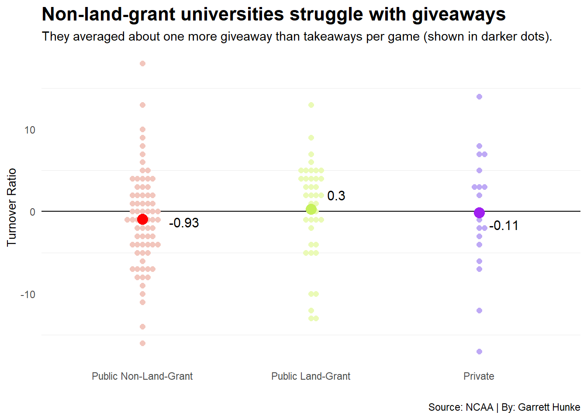
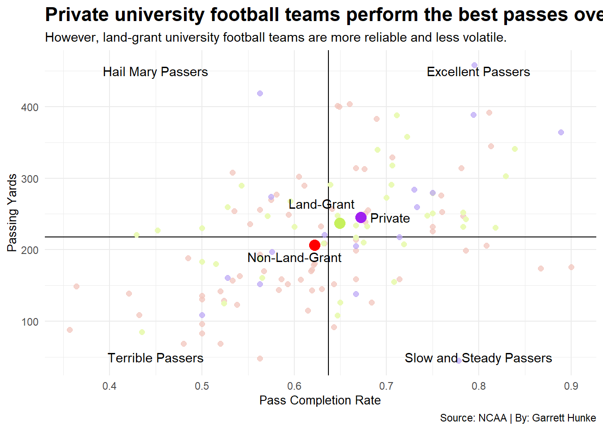

Impact of Institution Type on College Football Team Success
basic
institution
landgrant
Author
Garrett Hunke
Published
November 13, 2026
I know a lot about esports, but I know very little about traditional sports. You can see how that would make running a sports blog somewhat difficult, but fear not! Necessity is the mother of invention, and I am nothing if not inventive. Besides, there are some useful parallels between sports and esports to pursue. For example, money has a considerable influence in both industries.In esports, a team’s success can often be determined by how much money was put into their acquisition and training. I wanted to know if the same could be said for traditional sports like college football, so I did some research.
I will be looking at data regarding the 2025 Football Bowl Subdivision (FBS) college football season, which can be found on NCAA’s website. Another important factor I will be looking at is institution status, or how the university that the team represents is classified according to the federal government. I will be using three different categories: public land-grant universities, or universities that were created through the Morrill Acts, public non-land-grant universities, which are universities who are funded in part or in full by the government without having a land-grant status, and private universities, who do not receive any money from the government.
As an important disclaimer, I used AI to compile a CSV file of institution statuses for each member of the FBS. I then checked the resulting file’s contents online to verify it was correct. Dr. Berke gave me clearance for this, and this was the only time I used AI in the project. I manually compiled data about team expenditures in 2025 into a different CSV file. This information was compiled by the Knight-Newhouse College Athletics Database, which can be found here.
With that out of the way, it’s time to dig into the data I first wanted to compare the average amounts of money each institution status spent on their football teams and see if that information neatly lines up with win percentages.
Code
# Obligatory library callslibrary(tidyverse)
── Attaching core tidyverse packages ──────────────────────── tidyverse 2.0.0 ──
✔ dplyr 1.2.1 ✔ readr 2.2.0
✔ forcats 1.0.1 ✔ stringr 1.6.0
✔ ggplot2 4.0.3 ✔ tibble 3.3.1
✔ lubridate 1.9.5 ✔ tidyr 1.3.2
✔ purrr 1.2.2
── Conflicts ────────────────────────────────────────── tidyverse_conflicts() ──
✖ dplyr::filter() masks stats::filter()
✖ dplyr::lag() masks stats::lag()
ℹ Use the conflicted package (<http://conflicted.r-lib.org/>) to force all conflicts to become errors
Code
library(ggbeeswarm)library(ggrepel)library(rvest)
Attaching package: 'rvest'
The following object is masked from 'package:readr':
guess_encoding
Code
library(patchwork)# Main football game dataFOOTBALL <-read_csv("https://www.mattwaite.com/sportsdatafiles/footballlogs25.csv")
Rows: 1742 Columns: 73
── Column specification ────────────────────────────────────────────────────────
Delimiter: ","
chr (7): home_away, team_full, opponent, rslt, team_url, team, conference
dbl (63): game_number, team_pts, opponent_pts, cmp, passing_att, cmp_percen...
lgl (2): ot, bowl
date (1): date
ℹ Use `spec()` to retrieve the full column specification for this data.
ℹ Specify the column types or set `show_col_types = FALSE` to quiet this message.
Code
# Information about institution status# Data gathered from various Wikipedia articlesstatuses <-read_csv("institution_status.csv")
Rows: 129 Columns: 2
── Column specification ────────────────────────────────────────────────────────
Delimiter: ","
chr (2): institution_name, status
ℹ Use `spec()` to retrieve the full column specification for this data.
ℹ Specify the column types or set `show_col_types = FALSE` to quiet this message.
Code
statuses <-rename(statuses, team = institution_name)# Information about total expenses for college football teams in 2025# Most of the data was gathered from https://knightnewhousedata.org/reports/f0f7c8b7budgets <-read_csv("teambudgets.csv")
Rows: 136 Columns: 2
── Column specification ────────────────────────────────────────────────────────
Delimiter: ","
chr (1): team
dbl (1): budget
ℹ Use `spec()` to retrieve the full column specification for this data.
ℹ Specify the column types or set `show_col_types = FALSE` to quiet this message.
Code
# Setting up the actual dataframeallteams <- FOOTBALL |>group_by(team) |># Making turnover columnmutate(indivturnoverratio = (sum(interceptions) +sum(opponent_fumbles_lost) - (sum(opponent_interceptions) +sum(fumbles_lost)))) |>mutate(turnoverratio =mean(indivturnoverratio)) |># Making win percentage columnmutate(winpct =sum(rslt =="W") /length(rslt)) |># Trim the chaffselect(team, turnoverratio, winpct, cmp_percent, passing_yds)# Put it all togetherallteams <-left_join(allteams, statuses)
Joining with `by = join_by(team)`
Code
allteams <-left_join(allteams, budgets)
Joining with `by = join_by(team)`
Code
# Cull to only one instance for each teammeanteams <- allteams |>filter(row_number()==1)# Make a unique dataframe for these upcoming chartsinsttypes <- meanteams |>filter(!is.na(budget)) |>filter(!is.na(status)) |>filter(budget >0) |>group_by(status) |>summarize(meanwinpct =mean(winpct), meanbudget =mean(budget)/10000000)# First graph to compare average budgets of each institution statusgraph1 <-ggplot() +# Bar chartgeom_bar(data=insttypes, aes(x=status, weight=meanbudget), fill=colors) +ylim(0, 25) +coord_flip() +# Annotations for each bargeom_text(aes(x=3, y=22, label ="$19.9 million"), size =3) +geom_text(aes(x=2, y=16.5, label ="$14.1 million"), size =3) +geom_text(aes(x=1, y=6, label ="$3.8 million"), size =3) +# Title/subtitle & axes formattinglabs(title="Major differences in football spending...", subtitle="Private university spending was about a fifth the size of public university spending.", x="", y="Average Football Expenses (in millions)") +scale_x_discrete(labels=c("Private", "Public Land-Grant", "Public Non-Land-Grant")) +# Extra formattingtheme_minimal() +theme(panel.grid.major =element_blank(), panel.grid.minor =element_blank(), plot.title =element_text(size =16, face ="bold"), plot.title.position ="plot", axis.title =element_text(size =8))#Second graph to compare average win percentages of each institution statusgraph2 <-ggplot() +# Bar graphgeom_bar(data=insttypes, aes(x=status, weight=meanwinpct), fill=colors) +ylim(0, 1) +coord_flip() +# Annotations for each bargeom_text(aes(x=3, y=.61, label="55.6%"), size =3) +geom_text(aes(x=2, y=.52, label="46.3%"), size =3) +geom_text(aes(x=1, y=.61, label="56.2%"), size =3) +# Title/subtitle & axes formattinglabs(title="...minor differences in football winning", subtitle="Private universities boast the highest average win percentages in the FBS.", x ="", y="Win Percentage", caption="Source: NCAA, Knight-Newhouse, et al. | By: Garrett Hunke") +scale_x_discrete(labels=c("Private", "Public Land-Grant", "Public Non-Land-Grant")) +# Why doesn't this one work??# scale_y_discrete(labels=c("0.00" = "0%","0.25" = "25%","0.50" = "50%","0.75" = "75%", "1.00" = "100%")) +# Extra formattingtheme_minimal() +theme(panel.grid.major =element_blank(), panel.grid.minor =element_blank(), plot.title =element_text(size =16, face ="bold"), plot.title.position ="plot", axis.title =element_text(size=10)) # Combine using patchwork#graph1 / graph2
Unfortunately for my hypothesis, the data does not confirm my assumptions. Private universities have the highest average win percentage despite only having a fifth of the funding as public universities. How can this be? Surely the better-funded teams should be winning more often, the land-grant universities can’t even break a 50% win rate!
Perhaps if I look at another metric, the gap between the wealthier public universities and the needful private universities will become apparent. Turnover ratio is another promising metric. The turnover ratio is the number of times a team intercepts the ball or recovers a ball their opponents fumbled subtracted by the number of times the team fumbles the ball or when the opposing team intercepts the ball. What if I used this metric to find the difference?
Code
# Setting up these institution status-specific dataframes for use in both# this upcoming chart and the next chart as wellnonland <- meanteams |>filter(status =="public non-land-grant university")landgrant <- meanteams |>filter(status =="public land-grant university")private <- meanteams |>filter(status =="private university")# These are for overall means of each statusnonlandindiv <-data.frame(indivstatus ="public non-land-grant university", indivratio =mean(nonland$turnoverratio), indivcmp =mean(nonland$cmp_percent), indivpass =mean(nonland$passing_yds))landgrantindiv <-data.frame(indivstatus ="public land-grant university", indivratio =mean(landgrant$turnoverratio), indivcmp =mean(landgrant$cmp_percent), indivpass =mean(landgrant$passing_yds))privateindiv <-data.frame(indivstatus ="private university", indivratio =mean(private$turnoverratio), indivcmp =mean(private$cmp_percent), indivpass =mean(private$passing_yds))# Beeswarm plotggplot() +# Line to mark a turnover ratio of 0geom_hline(yintercept=0) +# Individual team plottinggeom_beeswarm(data=nonland, aes(x=reorder(status, turnoverratio), y=turnoverratio), color ="#f2c6bd", size =2) +geom_beeswarm(data=landgrant, aes(x=reorder(status, turnoverratio), y=turnoverratio), color ="#eafab6", size =2) +geom_beeswarm(data=private, aes(x=reorder(status, turnoverratio), y=turnoverratio), color ="#bea9f5", size =2) +# Plotting averages per institution typegeom_beeswarm(data=nonlandindiv, aes(x=indivstatus, y=indivratio), color="red", size=4) +geom_beeswarm(data=landgrantindiv, aes(x=indivstatus, y=indivratio), color="#c6f05b", size=4) +geom_beeswarm(data=privateindiv, aes(x=indivstatus, y=indivratio), color="purple", size=4) +# Annotations for averagesgeom_text(aes(x=1.25, y=-1.25, label="-0.93"), size =4) +geom_text(aes(x=2.15, y=2, label="0.3"), size =4) +geom_text(aes(x=3.15, y=-1.6, label="-0.11"), size =4,) +# Axes & title/subtitle formattingscale_x_discrete(labels=c("Public Non-Land-Grant", "Public Land-Grant", "Private")) +labs(title="Non-land-grant universities struggle with giveaways", subtitle="They averaged about one more giveaway than takeaways per game (shown in darker dots).", x="", y="Turnover Ratio", caption="Source: NCAA | By: Garrett Hunke") +# Extra formattingtheme_minimal() +theme(panel.grid.major =element_blank(), plot.title =element_text(size =16, face ="bold"), axis.title =element_text(size=10))

Well, that was less conclusive than I hoped. While land-grant universities seem to possess a slight edge in terms of turnover ratio, non-land-grant universities gave away the ball almost a whole additional time more than taking it from their opponents. Considering that public non-land-grant universities have the highest average football expenditure of all categories, this is somewhat concerning.
What if I look at one other metric, perhaps something that could more cleanly translate from investment to result? Some players are better passers than others, so teams should be willing to shill out more money to afford these players. That should mean that teams with more money to spend should have better passing statistics such as completion percentage and passing yards, right?
Code
# Starting scatterplot using dataframes from last code chunkggplot() +# Overall average linesgeom_hline(yintercept=mean(meanteams$passing_yds)) +geom_vline(xintercept=mean(meanteams$cmp_percent)/100) +# Base plotting for individual teamsgeom_point(data=nonland, aes(x=cmp_percent/100, y=passing_yds), color ="#f2c6bd", alpha =0.75, size =2) +geom_point(data=landgrant, aes(x=cmp_percent/100, y=passing_yds), color ="#eafab6", size =2) +geom_point(data=private, aes(x=cmp_percent/100, y=passing_yds), color ="#bea9f5", alpha =0.75, size =2) +# Plotting for institution status averagesgeom_point(data=nonlandindiv, aes(x=indivcmp/100, y=indivpass), color ="red", size =4) +geom_point(data=landgrantindiv, aes(x=indivcmp/100, y=indivpass), color ="#c6f05b", size =4) +geom_point(data=privateindiv, aes(x=indivcmp/100, y=indivpass), color ="purple", size =4) +# Annotating institution status average pointsgeom_text(aes(x=0.6, y=190, label ="Non-Land-Grant")) +geom_text(aes(x=0.63, y=265, label="Land-Grant")) +geom_text(aes(x=0.704, y=245, label ="Private")) +# Annotating quadrantsgeom_text(aes(x=0.45, y=450, label ="Hail Mary Passers")) +geom_text(aes(x=0.8, y=450, label ="Excellent Passers")) +geom_text(aes(x=0.45,y=50, label ="Terrible Passers")) +geom_text(aes(x=0.8, y=50, label ="Slow and Steady Passers")) +# Title/subtitle, axes, and design formattinglabs(title="Private university football teams perform the best passes overall", subtitle="However, land-grant university football teams are more reliable and less volatile.", x="Pass Completion Rate", y="Passing Yards", caption="Source: NCAA | By: Garrett Hunke") +theme_minimal() +theme(plot.title =element_text(size =16, face ="bold"), axis.title =element_text(size=10))

Once again, public non-land-grant universities lag behind the average, with private universities performing the best overall. However, it is worth noting that the private university teams vary quite a bit in terms of statistics while public land-grant universities are overall more consistent.
Overall, it seems that my hypothesis was disproven. There are a few issues with my study, of course. I only looked at 2025 data, so maybe there were some exceptional and/or abysmal performances that year that skewed the data. Maybe I looked at the wrong metrics to determine skill in this scenario. Either way, I must concede that I do not know what I am talking about when it comes to college football.